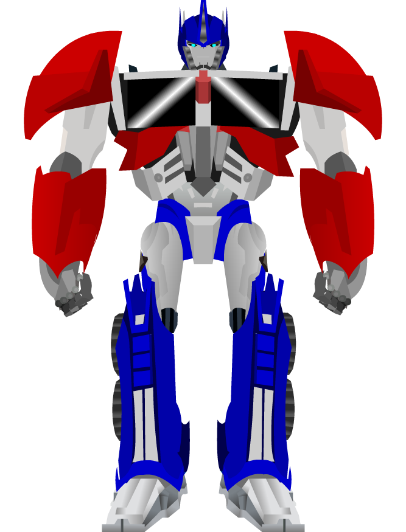

| 1 2 3 4 5 6 7 8 9 10 11 12 13 14 15 16 17 18 19 20 21 22 23 24 25 26 27 28 29 30 31 32 33 34 35 36 37 38 39 40 41 42 43 44 45 46 47 48 49 50 51 |
| 19:19:15 | SCENARIO |  Unlock scenario |
| 19:18:55 | SCRIPT |  Unlock script written |
| 19:16:36 | KTHURA |  Empty map for the Primos tunnel |
| 19:15:24 | SCENARIO | Unlock Starrow |
| 18:50:55 | WORLDMAP |  The Caves of Starrow |
| 18:49:54 | KTHURA | Empty map created for The Caves of Starrow, so I can make a WorldMap entry for it |
| 18:48:20 | UPDATED | |
| 18:43:53 | UPDATED | |
| 17:42:59 | UPDATED | |
| 17:33:15 | SITE |  It will take 1872 more posts to appear automatically for IJsblokje, as well as Lucifer now, so the first time they'll appear in the same post, however Lucifer will then reset to 1000 entries and IJsblokje to 1001, so the distance will increase over time :P |
| 17:32:20 | LINK |  IJsblokje's portrait should be linked to this devlog properly now |
| 17:30:49 | TEST |  Test |
| 17:23:58 | FAILURE |  Why did the site not update? |
| 17:22:28 | ART |   Can you see her? |
| 17:21:50 | SITE | Portrait copied in, but not yet linked |
| 17:16:40 | ART | Fine tuning the portrait |
| 17:12:59 | ART | Portret of Ryanna's "IJsbokje" form |
| 16:53:34 | NOTE |  I will make some study to the Euphoria language... It does look interesting. ;) |
| 16:45:31 | NOTE | The mission of Freddy comes later, though, the link's there, and that was what mattered to me at the present time. |
| 16:23:08 | CONFIRMED |  Yup, that works |
| 16:21:07 | FIXED |  I guess things didn't work |
| 15:21:23 | LINK | Marrilona's scenario, actor plus dungeon unlocking have been linked |
| 14:28:58 | BACKUP |  Because of this failure I've decided to run an extra backup |
| 14:28:33 | FAILURE | Windows Freezes, crashes, and shows the Blue Screen of Death 90% of the time the entire system is active. |
| 14:28:10 | FAILURE | Well, my Mac freezes 90% of the time when a browser is active |
| 14:27:49 | FAILURE | And a complete reboot was in order |
| 14:27:39 | FAILURE | Thanks to Google Chrome my entire mac froze |
| 14:27:25 | FAILURE | I HATE browsers |
| 13:42:00 | LUA |  Code refresh |
| 13:37:28 | WORLDMAP | Freddy's Restaurant |
| 13:30:58 | MAP |  Empty map created for Freddy's, so Marrilona can immediately establish the link to that place |
| 13:29:46 | SCENARIO | Cameo Marrilona text |
| 13:26:09 | ART | Marrilona in servant girl clothes (and yes, she'll be a cameo) |
| 11:25:05 | SCENARIO | The guards in the main portion of the palace can now speak to you |
| - = 07 Jun 2018 = - |
| 23:47:02 | STATUS |   But for now I'll end this session, see ya! |
| 23:46:49 | STATUS | After i can leave Windville I'm not yet done completely, but a few starts with the next missions could be done, as I do need to graphically prepare Nino for combat.... :( |
| 23:43:47 | STATUS | Only a few (time consuming) things to do though: - Chain to the next dungeon (planned to happen as soon as you arrive back downtown after Nino joined the party)
- Unlock secret dungeon Freddy's
- Item shop
- Upgrade shop
None of that will be done in one day only, neither should it take ages... |
| 23:41:42 | STATUS | I need a way to work around #123 and I want to work on finishing Windville asap, as I have it up to here with that place :P |
| 23:40:24 | GITHUB |  All stuff pushed |
| 23:40:12 | FAILURE | EVERYTHING LAGS!!! |
| 23:39:58 | ALPHA |  Updated |
| 23:39:32 | BACKUP | Running |
| 23:20:25 | STATUS | Hopefully things are a LITTLEBIT better now |
| 23:19:39 | FAILURE | Computers.... WONDERFUL THINGS SOMETIMES!!! |
| 22:53:06 | WINE |  Apparently Wine does not like jcrx, at least not when being piped... I don't know why |
| 22:29:26 | FIXED | level miscalculation |
| 22:24:36 | NOTE | |
| 22:15:27 | WINDOWS |  Some study taught me that resource hacker can be scripted and therefore be used programmatically. This can speed things up for the Windows build when the time comes... |
| 22:01:44 | TEST | And Take Two |
| 22:00:17 | FIXED | No return |
| 21:57:49 | TEST | I cannot yet test if the spells themselves work, but I *can* test if they actually list up. |
| 21:55:37 | UPDATED | |
| 21:54:48 | CHARACTER |  Scripted out what Nino has to do to learn a new spell/ability |
| 21:42:32 | NOTE | I will get to Nino's final move "Resurrection" later as that requires some code I do not have yet, and which I cannot even test yet. |
| 21:21:29 | ABILITY |  Fire Storm |
| 21:18:11 | ABILITY | Sanctify |
| 21:11:16 | ABILITY | Holy Strike |
| 21:08:40 | ABILITY | Esuna |
| 21:07:05 | ABILITY | Vitalize |
| 21:05:36 | ABILITY | Ferocious slash |
| 20:55:19 | ABILITY | Cure Poison & Disease |
| 20:49:16 | ABILITY | Rejuvenate |
| 20:48:15 | ABILITY | Heal |
| 20:44:49 | UPDATED | |
| 20:38:40 | BUG |  #123 #123 -- I think Windows hates jcrx :-/ |
| 20:11:30 | SCRIPT | I've tried a way to get around #122 , but some tests will have to confirm if stuff actually works... or not... |
| 19:39:05 | TECHNO |  Binary in a pipe stream is not taken so well by Windows so it seems #122 |
| 19:02:29 | UPDATED | |
| 18:55:03 | ANALYSIS |  I have the strong feeling that the "slave-objects" in the follow-the-leader system, walking through walls is caused by bug #118 , but I cannot yet prove it. |
| 18:53:01 | ALPHA | Updated |
| 18:52:42 | ALPHA | UnoWayGames has appllied and been accepted as a closed-alpha tester |
| 15:36:01 | CONFIRMED | It works now |
| 15:26:50 | TEST | Take FIve (sigh) |
| 15:26:45 | FIXED | It's fixed now |
| 15:26:40 | STUPIDITY |  Code typo |
| 15:21:55 | TEST | Take Four |
| 15:21:48 | FIXED | A little "revealing" bug after "Now Loading" |
| 15:20:42 | FIXED | Leaving Anna's temple would should the secret Nino sprite that had to be invisible (except for the statue scenario). |
| 15:14:18 | TEST | Take Three 
|
| 15:14:09 | FIXED | Exit Spot error |
| 15:06:31 | TEST | Take TWO (and so another take appears to be still required, eh?) |
| 15:06:12 | FIXED | "nil" |
| 14:59:54 | TEST | Take ONE (and hopefully the ONLY take) |
| 14:58:56 | DONE |   #117 #117 although it's not yet tested properly |
| 14:53:53 | LUA | IDE refresh |
| 14:53:14 | SCENARIO | |
| 14:17:10 | NOTE | And no I ain't sad about it! ON THE CONTRARY ACTUALLY!!! |
| 14:16:53 | NOTE | The words of that last ability will very soon only be spoken when referring to that spell in this game, and no longer in conxtext the spell was named after.... :P |
| 14:16:13 | ABILITY | It Giet Oan |
| 14:05:32 | ABILITY | Diepvries |
| 14:00:44 | ABILITY | Sneeuwpret |
| 13:28:03 | SCREENSHOT | |
| 12:29:02 | FIXED | Fixed it ;) |
| 12:27:56 | BUG | Indeed the source of 'evil' has been found for the error itself, but now to find out what is the cause of this source of evil. |
| 12:21:39 | SOLVED |  i think I solved the matter |
| 11:45:40 | CONFIRMED | Talking to the king works |
| 11:26:33 | GITHUB | |
| 11:24:53 | BUG | Leaving the palace crashes the game |
| 11:20:45 | LINK | Linked this routine to the king actor |
| 11:19:13 | DONE | And the 4th and last chair has been mounted and my hands hurt even more |
| 11:18:36 | ENHANCEMENT |  A quick npc speak routine basing their speech on the active character |
| 11:00:12 | SCENARIO | King speech |
| - = 06 Jun 2018 = - |
| 23:50:15 | DONE | mounted 3 IKEA chairs.... one more to go, but my hands hurt now, so I guess the last one is for tomorrow. |
| 23:44:27 | OFFTOPIC | |
| 23:25:30 | TODO |  Spell list for Nino |
| 23:25:07 | BACKUP | Running |
| 23:22:34 | ALPHA | Updated |
| 23:21:46 | STATUS | So far my work for today |
| 22:50:56 | FIXED | Transformations not added when taking the transformation crystals although the data *is* created |
| 22:35:21 | TRANSFORMATION | IJsblokje |
| 22:25:59 | DONE | Crystal will disappear once Ryanna absorbed its power |
| 20:52:21 | STATUS | It appears Ryanna can pick up the crystal now... I need to check the data if everything's right though |
| 20:51:47 | DONE | Mounted 1 IKEA chair.... 3 more to go |
| 19:19:57 | MYSTERY |  It doesn't happen anymore, and it's anybody's guess why it happened in the first place :-/ |
| 19:17:01 | BUG | !!FATAL ERROR!!!
Error
[string "Libs/flow.rel/flow.lua"]:56: attempt to call field 'undef' (a nil value)
Traceback
[string "Script/Subs/Error.lua"]:59: in function 'undef'
[string "Libs/flow.rel/flow.lua"]:56: in function 'define'
[string "Libs/flow.rel/flow.lua"]:86: in function 'use'
[string "script/subs/loadgame.lua"]:94: in function 'Load'
[string "script/flows/mainmenu.lua"]:162: in function <[string "script/flows/mainmenu.lua"]:156>
[string "Libs/LAURA.REL/debugconsole.lua"]:118: in function 'nothing'
[string "Libs/killcallback.rel/kcb.lua"]:42: in function <[string "Libs/killcallback.rel/kcb.lua"]:41>
[C]: in function 'xpcall'
NOTHING should make it possible this can happen, so I really wonder how it still happens :-/ |
| 19:08:36 | FIXED | Demon == nil |
| 18:59:40 | FIXED | Of course, I fixed that as well |
| 18:58:49 | COCKROACH |  Ingore fixed, but now there was a casing error |
| 18:52:07 | TEST | Let's test that! |
| 18:52:02 | FIXED | I think I fixed that |
| 17:59:35 | BUG | Clicking the crystal does not do anything.... This needs to be sorted out... |
| 17:49:39 | DONE | Crystal pick up code |
| 17:21:02 | SCENARIO | pick up text |
| 17:20:56 | NOTE | which is not yet been fully scripted so trying to pick the crystal up will cause a crash... for now.... |
| 17:20:31 | LINK | Linked Demon Crystal to demon addition routine |
| 15:38:12 | FIXED | I don't know why but the crystal's there now |
| 14:58:08 | DONE | |
| 14:47:04 | GO | |
| 14:25:29 | BUG | but the crystal won't show for some odd reason... :-/ |
| 14:25:15 | STATUS | Entering works |
| 14:14:50 | TEST | I need to test this of course.... |
| 14:06:49 | LINK | And vault's exit linked to interior of the palace |
| 14:06:36 | LINK | Inside vault linked to lock |
| 12:23:12 | CONFIRMED |  And that works the way it was intended now.... |
| 12:20:11 | FIXED | file misreferrence |
| 12:09:02 | ART | Animated Nino walking South |
| 00:23:21 | STATUS | see ya later |
| 00:23:05 | TODO | Linkup code |
| 00:22:11 | BACKUP | Running |
| 00:22:05 | GITHUB | Updated |
| 00:20:54 | TODO | |
| 00:20:08 | STATUS | Of course I need to script the crystals now |
| - = 05 Jun 2018 = - |
| 23:48:43 | MYSTERY | I'm not quite sure why the Kthura editor marks its obstacles in such a strange manner.... |
| 23:48:18 | MAP | I designed the vault |
| 23:40:18 | KTHURA | GINI project script modification for Crystal |
| 23:39:29 | KTHURA | Crystal script |
| 23:39:22 | ART | Crystal |
| - = 02 Jun 2018 = - |
| 23:53:46 | STATUS | In the next session the vault itself will be done ;) |
| 23:53:32 | BACKUP | Running |
| 23:50:33 | GITHUB | All crap pushed |
| 23:46:52 | NOTE | You can't fix what ain't broken, but at least no nil crash any more... |
| 23:46:39 | CONFIRMED | Yeah, that works... |
| 23:45:24 | NOTE | I refuse to call this a fix, but hopefully this takes care of stuff... Somehow... :-/ |
| 23:36:39 | BUG | Nil? |
| 23:33:47 | FIXED | Not return on false code |
| 23:23:29 | NOTE | it will for now produce an error, which is deliberate. I will soon script the vault itself. |
| 23:23:08 | LINK | Puzzle correct linked to vault opening function |
| 23:17:34 | FIXED | "A" was entered by default some how when getting into the vault enter mode |
| 23:15:00 | FIXED | No font error (would only trigger when using debug cheats). |
| 19:49:38 | ENHANCEMENT | IMG classing |
| 19:27:58 | HOMEBREW |  Some issues with TFT REVAMPED fixed |
| 19:05:44 | FIXED | I think I fixed it now |
| 19:04:38 | CONFIRMED | Yup, I do get an error that makes sense... Well, almost... :-/ |
| 19:01:22 | RYANNA |  I've fixed a little issue in the error catcher. Hopefully it can shine a line on what exactly happened. |
| 19:01:02 | BUG | the error above should not be possible |
| 19:00:50 | DUMP | !!FATAL ERROR!!! Error preprocess.lua:141: bad argument #1 to 'ipairs' (table expected, got nil) Traceback [string "Script/Subs/Error.lua"]:59: in function <[string "Script/Subs/Error.lua"]:24> [C]: in function 'ipairs' preprocess.lua:141: in function 'PreProcess' use.lua:43: in function 'Use' [string "Script/Maps/Script/TOWN_WINDVILLE.lua"]:143: in function <[string "Script/Maps/Script/TOWN_WINDVILLE.lua"]:140> [string "Script/Flows/field.rel/field.lua"]:452: in function 'odraw' [string "Libs/killcallback.rel/kcb.lua"]:77: in function 'draw' [C]: in function 'xpcall'
|
| 17:52:57 | TEST | Time to test's short, but I'll have more time later, so it ain't that much of a setback |
| 17:33:54 | TODO | Before I can check that a proper linkup is in order |
| 17:33:10 | NOTE | The system will NOT yet check if everything's alright... I first need to find out if all I did so far actually works... at all |
| 17:32:29 | DONE | Show what letters have been entered |
| 16:56:18 | FIXED | And some more of those |
| 16:51:43 | FIXED | A few errors that come up on the way |
| 16:46:47 | RYANNA | Builder now set to alias a few font pics for easier access in vault puzzle |
| 16:24:02 | SCRIPT | Base Script vault puzzle |
| 16:23:51 | FONT |  Put in the arrow characters and some other charts I'll need |
| 15:58:34 | LUA | MousePos Makes it quicker to call, and if Love decides to do things different again for no apparent reason I now only have to change ONE function and everything will work again :P |
| 15:36:56 | NOTE | The fact that I wrote them does not mean I can all remember them.... There's way too much |
| 15:36:37 | STUDY |  Right, I had to look up the input routines once more :D |
| 15:30:26 | FIXED | |
| 11:13:14 | CONFIG |  Button coords |
| 10:37:18 | CONFIG | Vault code |
| 10:02:59 | GO | |
| - = 01 Jun 2018 = - |
| 22:00:14 | ALPHA | Updated |
| 21:59:41 | BACKUP | Running |
| 21:58:19 | CONFIRMED | That all works |
| 21:00:13 | LINK | And vice versa also, by the way |
| 21:00:04 | LINK | Link code for going from the entrance to the main section of the place has been written |
| 19:48:32 | FIXED | Project file error fixed |
| 19:45:17 | FIXED | This should fix a few issues in the credits.md file (I hope). |
| 19:41:45 | FIXED | |
| 15:41:06 | TODO | Linking the two palace rooms |
| 15:37:35 | MAP | Palace decorated with candles and torches |
| 15:29:26 | FIXED | Output error |
| 15:23:36 | ART | converted wall torch |
| 15:23:25 | ART | Converted Candle |
| 15:17:44 | FIXED | There was a little problem in the process though |
| 15:14:58 | NOTE | The JBTF builders performs no kind of compression at all. Not in the png files and not in the JCR packing and not in the JCR fat. This was to ensure compatibility with all future tools I may need on this matter. |
| 15:14:04 | BLITZMAX |  I've set up a quick took to convert BlitzMax style animations to jbtf files |
| 12:37:12 | NOTE | You cannot yet enter the palace interior as the proper linkups have not yet been done |
| 12:36:47 | MAP | Windville palace interior |
| 1 2 3 4 5 6 7 8 9 10 11 12 13 14 15 16 17 18 19 20 21 22 23 24 25 26 27 28 29 30 31 32 33 34 35 36 37 38 39 40 41 42 43 44 45 46 47 48 49 50 51 |